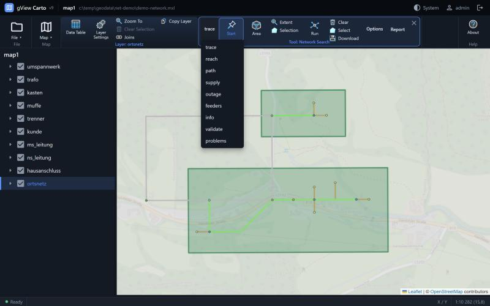
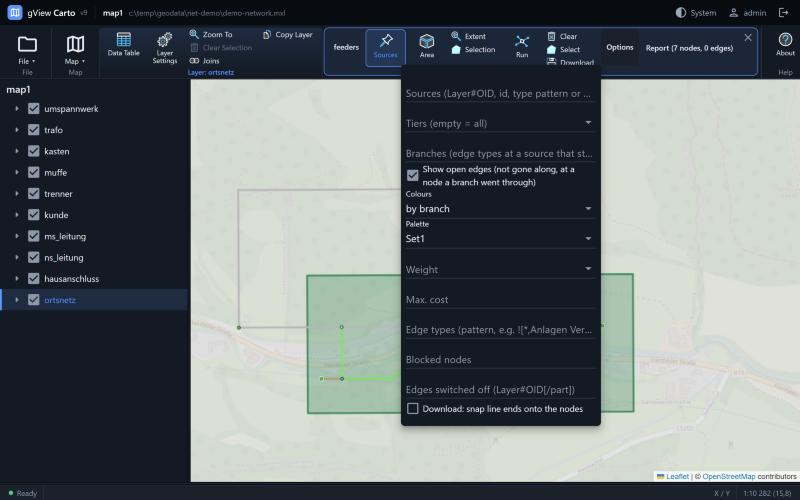
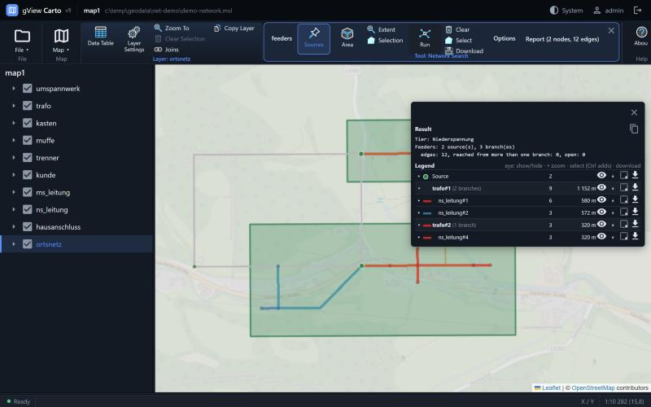
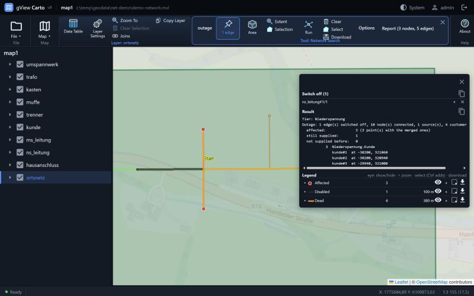
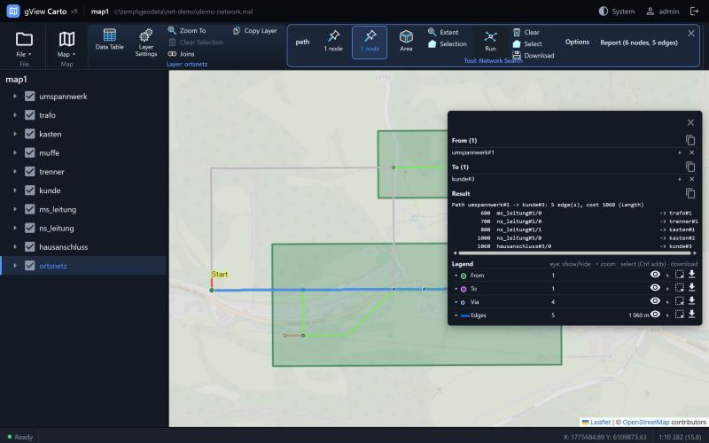
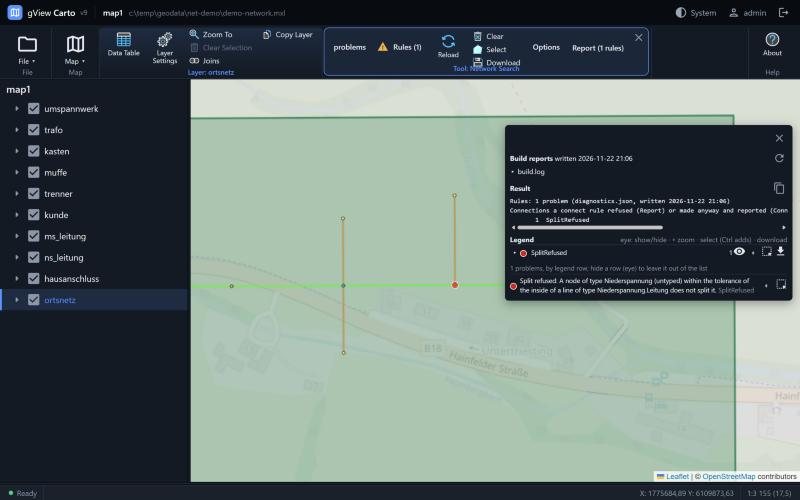

Netzwerk-Werkzeuge¶
Auf einem gebauten Netzwerk (siehe Netzwerke erstellen) sucht das Werkzeug Network Search in gView Carto: Was hängt an einem Knoten, welcher Weg ist der kürzeste, wer ist versorgt, was fällt aus, welcher Trafo und welcher Abzweig speisen eine Leitung, und wo hat der Bau Probleme gemeldet. Die Beispiele verwenden das Beispielnetz von Netzwerke erstellen.
Das Werkzeug¶
Network Search steht in der Werkzeugleiste unter Tools. Es öffnet eine eigene Leiste:

links die Operation (hier trace),
daneben die Knöpfe zum Anklicken in der Karte, je nach Operation Start, From/To, Sources/Sinks oder Switch off. Ein Klick in der Karte nimmt den nächsten Knoten; der Knopf zeigt danach die Anzahl (z. B. 1 node),
Area begrenzt die Suche auf einen Bereich: Extent nimmt den Kartenausschnitt, Selection die ausgewählten Flächen. Kanten über die Grenze werden nicht verfolgt,
Run startet die Suche,
Clear löscht das Ergebnis, Select übernimmt alle gefundenen Objekte als Auswahl der Layer, Download speichert das Ergebnis als GeoJSON,
Options enthält die weiteren Einstellungen, Report öffnet das Ergebnisfenster wieder.
Liegen an der angeklickten Stelle mehrere Knoten (z. B. ein Trafo in der Mittel- und in der Niederspannung, wenn die Ebenen getrennt gebaut sind), wählt die eingestellte Ebene den Knoten; ein weiterer Klick an dieselbe Stelle nimmt den nächsten.
Operationen¶

trace: alles, was vom Start aus erreichbar ist, bis zu gesperrten Knoten (z. B. offenen Trennern).
reach: wie trace, aber nur bis zu einer Entfernung bzw. Kosten (Max. cost unter Options).
path: der kürzeste Weg von From nach To.
supply: Welche Senken (z. B. Kunden) werden von den Quellen (z. B. dem Umspannwerk) erreicht?
outage: Was fällt aus, wenn Knoten oder Leitungen abgeschaltet werden (Switch off)?
feeders: Von welcher Quelle und über welchen Abzweig wird jede Leitung gespeist?
info: die Daten eines Knotens und seiner Kanten.
validate: prüft die Prüfregeln des Netzes (Tab Rules).
problems: zeigt, was der Bau gemeldet hat.
Optionen¶

Tiers: nur in diesen Ebenen suchen (mehrere möglich, leer = alle). Mit einer Ebene gelten deren Quellen, Senken und gesperrte Knoten, und eine Suche hält an den Quellen der Ebene an.
Weight, Max. cost: was die Kosten messen (Länge oder ein Gewicht des Netzes) und wo die Suche endet.
Edge types: nur Kanten dieser Typen verfolgen, z. B.
[Niederspannung,*].Blocked nodes: zusätzlich gesperrte Knoten, z. B.
[*,Trenner]odertrenner#1.Edges switched off: Leitungen, die für diese Suche aus sind, z. B.
ns_leitung#4.Download: snap line ends onto the nodes: Die Linien im GeoJSON enden genau auf den Knoten.
Je nach Operation kommen Felder dazu, bei feeders z. B. Sources, Branches, Show open edges, Colours und Palette.
Ergebnis und Legende¶
Das Ergebnis erscheint in der Karte und im Ergebnisfenster: oben die gewählten Knoten, darunter der Bericht (Result, mit Knopf zum Kopieren) und die Legende. Die Legende zeigt jede Art des Ergebnisses (z. B. Supplied, Not supplied) mit Farbe und Anzahl. Je Zeile:
das Auge blendet die Art in der Karte aus und ein (bleibt beim nächsten Lauf derselben Operation erhalten),
+ zoomt auf die Objekte,
Auswählen übernimmt die Objekte als Auswahl ihrer Layer, mit gedrückter Strg-Taste kommen sie zur Auswahl dazu,
Download speichert nur diese Art als GeoJSON.
Versorgung¶

supply ohne angeklickte Quellen nimmt die Quellen des Netzes (bzw. der Ebene). Hier sind sechs Kunden versorgt (grün),
kunde#4 nicht (rot, größer): Sein Hausanschluss endet auf einer Leitung, ohne angeschlossen zu sein. Das ist der
T-Stoß aus dem Beispiel, den der Bau gemeldet statt verbunden hat (siehe problems unten). Kunden, die über mehrere Wege
versorgt sind, erscheinen orange als Multiple.
Feeders: Trafo und Abzweig¶

feeders färbt jede Leitung nach dem Abzweig (oder unter Colours nach der Quelle), über den sie gespeist wird. Ohne angeklickte Quellen sind es die Quellen der Ebene, im Bild die beiden Trafos der Ebene Niederspannung. Branches legt mit einem Typmuster fest, welche Kanten an einer Quelle einen Abzweig beginnen; leer ist jede Kante an der Quelle ein Abzweig. Die Legende listet die Abzweige je Quelle mit Anzahl der Leitungen und Länge. Leitungen, die von mehr als einem Abzweig erreicht werden (Ring, Doppeleinspeisung), sind rot (Multiple); mit Show open edges erscheinen Leitungen, über die kein Abzweig gegangen ist (z. B. an einer Trennstelle), grau gestrichelt (Open).
Für ein ganzes Netz und zum Zurückschreiben in die Daten gibt es den Pipe-Knoten Network Trace.
Ausfall¶

outage: Mit Switch off eine Leitung oder einen Knoten anklicken, Run. Abgeschaltet (Disabled) ist dunkel, die Leitungen ohne Versorgung (Dead) sind orange, die betroffenen Kunden (Affected) rot. Der Bericht nennt sie mit Koordinaten.
Kürzester Weg¶

path: From und To anklicken, Run. Der Bericht listet die Kanten des Wegs mit den aufsummierten Kosten. Gesperrte
Knoten passiert der Weg nicht. Im Beispiel führt er durch trenner#1, weil für den Trenner kein Schaltzustand
eingestellt ist (Layer Settings, Normal switching state); mit Blocked nodes lässt er sich für eine Suche sperren.
Info¶

info zeigt zu einem Knoten die Id, den Typ, die Koordinaten, den Shard, ob er gesperrt ist, und alle Kanten mit ihren Typen. Damit lässt sich prüfen, ob eine Leitung wirklich am Knoten angeschlossen ist.
Probleme des Baus¶

problems liest die Berichte des letzten Baus (Konflikte, Hinweise, Meldungen der Verbindungsregeln, Duplikate, zusammengeführte Punkte) und zeigt sie als Punkte in der Karte. Die Kategorie wählt man links, Reload liest die Berichte nach einem neuen Bau erneut. Ein Klick auf eine Zeile zoomt zum Problem, Select wählt die beteiligten Objekte aus. Im Bild ist es der gemeldete T-Stoß aus dem Beispiel (SplitRefused). Unter build.log steht das Protokoll des Baus.